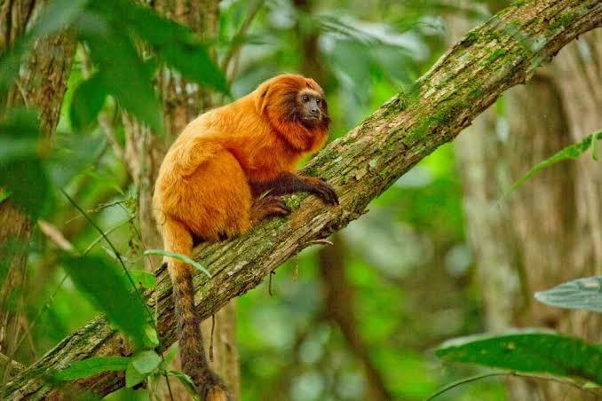
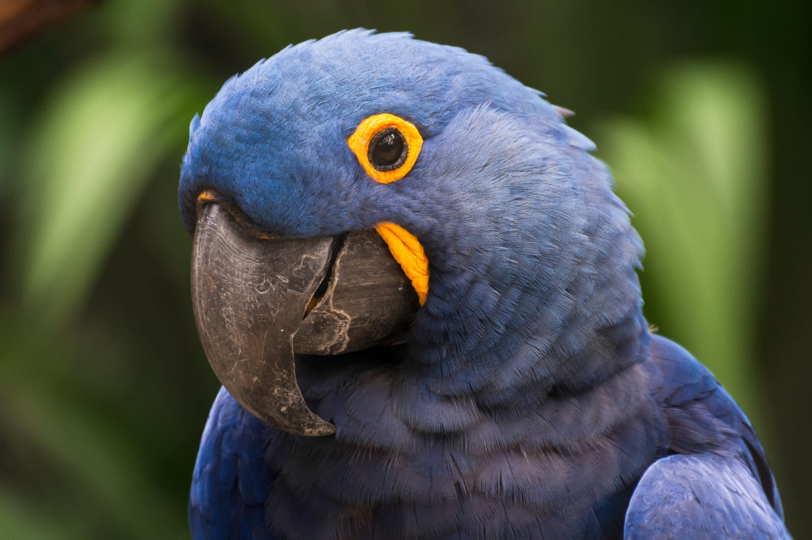
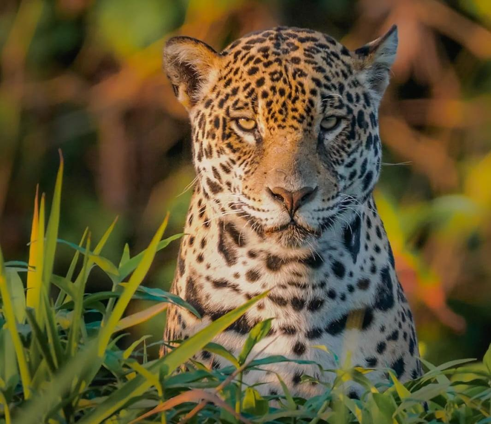
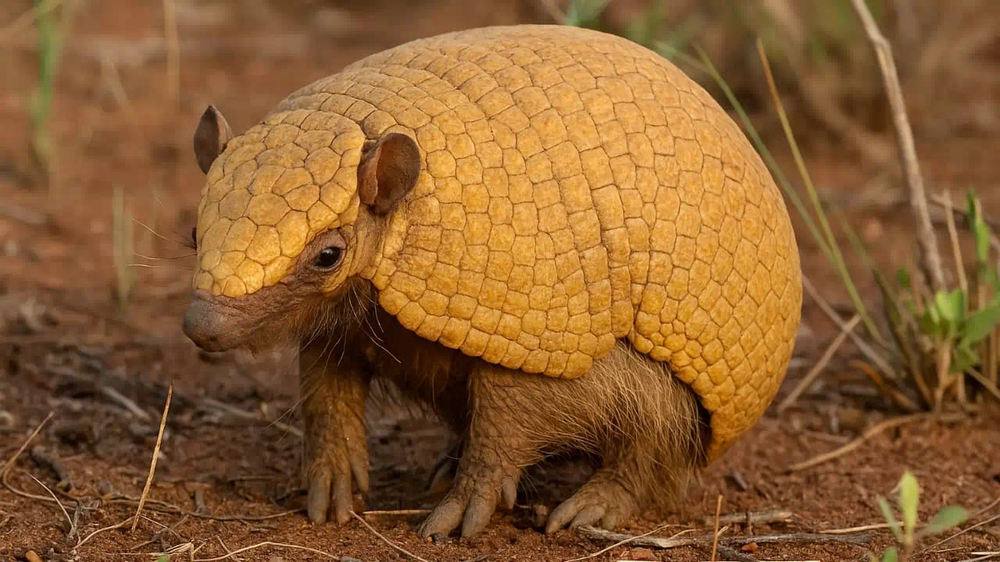
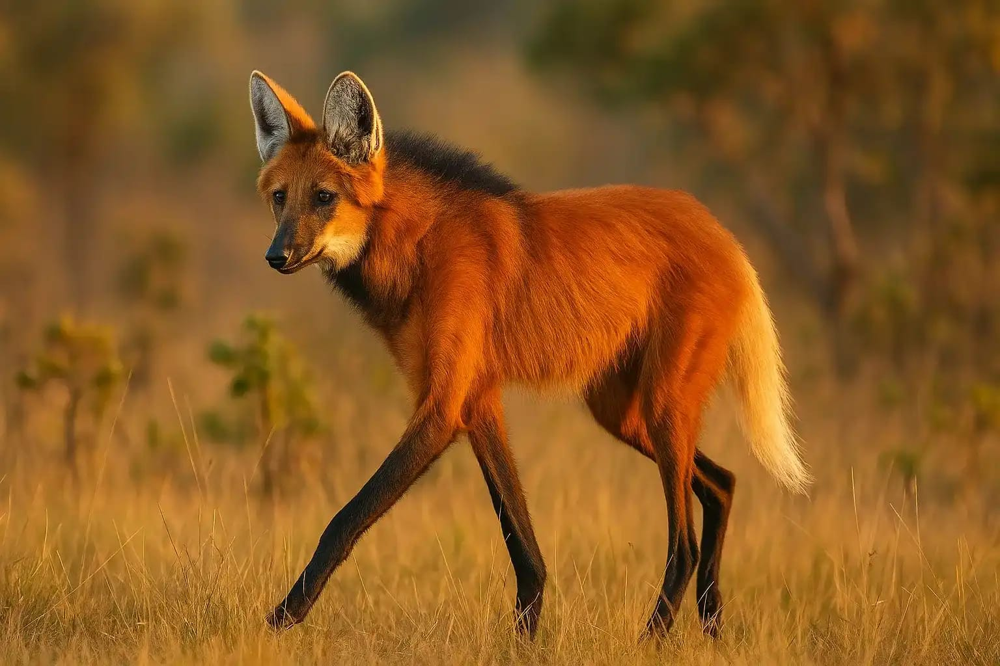
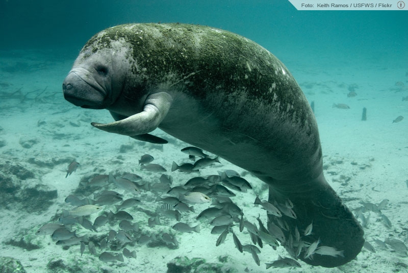
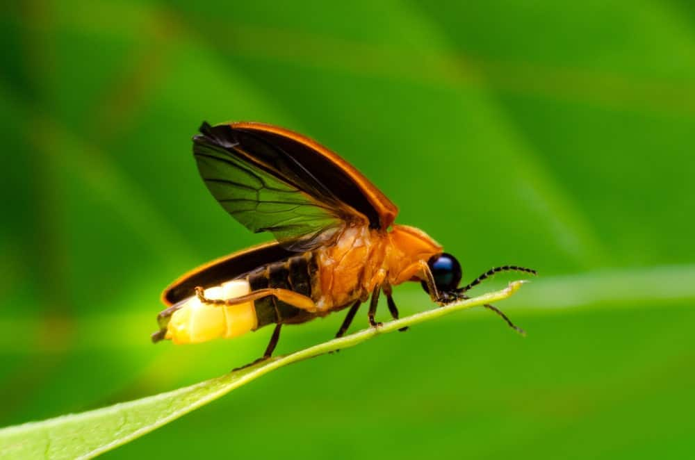
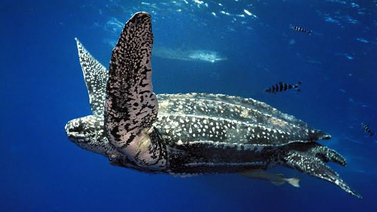

Mico-leão-dourado
Leontopithecus rosalia
Em perigoPopulação estimada: ~2.500 indivíduos
Vive apenas na Mata Atlântica do Rio de Janeiro. Graças a projetos de conservação, saiu da lista de "criticamente em perigo".
Conheça oito animais brasileiros que correm risco de extinção, com nome científico, status de conservação e uma estimativa de quantos indivíduos ainda existem na natureza.

Leontopithecus rosalia
Em perigoPopulação estimada: ~2.500 indivíduos
Vive apenas na Mata Atlântica do Rio de Janeiro. Graças a projetos de conservação, saiu da lista de "criticamente em perigo".

Anodorhynchus hyacinthinus
VulnerávelPopulação estimada: ~6.500 indivíduos
Maior arara do mundo, típica do Pantanal. Sofre com o tráfico e a destruição dos buritizais.

Panthera onca
VulnerávelPopulação estimada: ~80.000 no Brasil
Maior felino das Américas. Ameaçada pela caça, queimadas e perda de habitat, sobretudo na Amazônia e no Pantanal.

Tolypeutes tricinctus
Em perigoPopulação estimada: ~1.000 indivíduos
Endêmico do Cerrado e da Caatinga. Ficou conhecido como mascote da Copa do Mundo de 2014 (Fuleco).

Chrysocyon brachyurus
VulnerávelPopulação estimada: ~17.000 indivíduos
Maior canídeo da América do Sul. Vive no Cerrado e sofre com atropelamentos e avanço da agricultura.

Trichechus manatus
Em perigoPopulação estimada: ~1.100 no Brasil
Mamífero aquático que vive na costa nordestina. Ameaçado pela pesca acidental, poluição e perda de manguezais.

Amydetes sp.
VulnerávelPopulação estimada: em forte declínio na Mata Atlântica
A poluição luminosa das cidades, o uso de agrotóxicos e a perda de habitat têm reduzido drasticamente as populações de vaga-lumes no Brasil.

Dermochelys coriacea
Criticamente em perigoPopulação estimada: ~34.000 fêmeas adultas no mundo
Maior tartaruga do planeta, pode pesar até 700 kg. Desova em praias brasileiras e sofre com a captura acidental em redes de pesca.
A espécie enfrenta risco alto de extinção na natureza em médio prazo se as ameaças continuarem.
Risco muito alto de extinção em estado selvagem. As populações já são pequenas ou fragmentadas.
Risco extremamente alto de extinção na natureza em curto prazo. Situação mais grave da escala IUCN.
Os números são estimativas divulgadas por órgãos como o ICMBio, a IUCN e instituições de pesquisa. As populações podem variar conforme novos censos e monitoramentos.